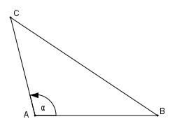

Aufgabe 190 Zwischen drei gleich hoch liegenden Aussichts- punkten A, B und C sind die Entfernungen bekannt. AB = 4,1 km, AC = 3,2 km und BC = 5,7 km. Wie groß ist der Sehwinkel α, unter dem von A aus die beiden anderen Punkte erscheinen?

Fall SSS: Cosinussatz: BC2 = AC2 + AB2 - 2*AC*AB*cos α |+2*AC*AB*cos α BC2 + 2 * AC * AB * cos α = AC2 + AB2 |-BC2 2 * AC * AB * cos α = AC2 + AB2 - BC2 |:2*AC*AB AC2 + AB2 - BC2 cos α = ----------------- = 2 * AC * AB 3,22 km2 + 4,12 km2 - 5,72 km2 = -------------------------------- = 2 * 3,2 km * 4,1 km = - 0,2073 --> α = 102°